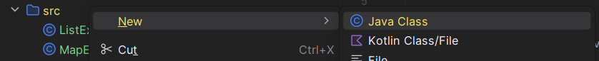
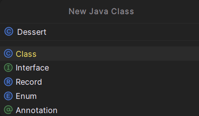
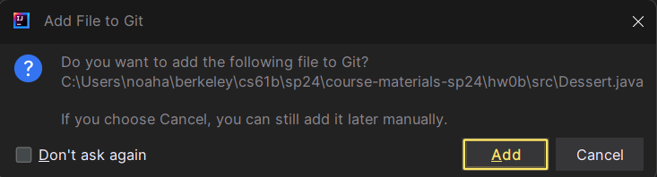
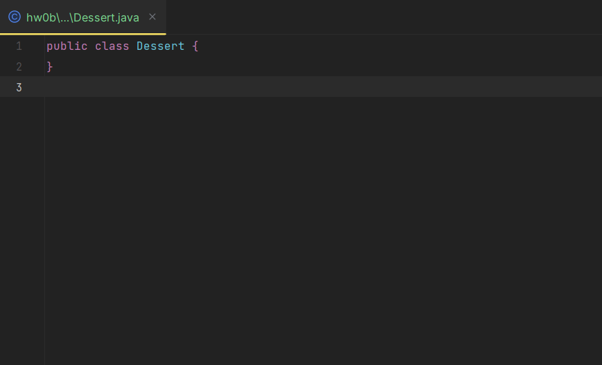
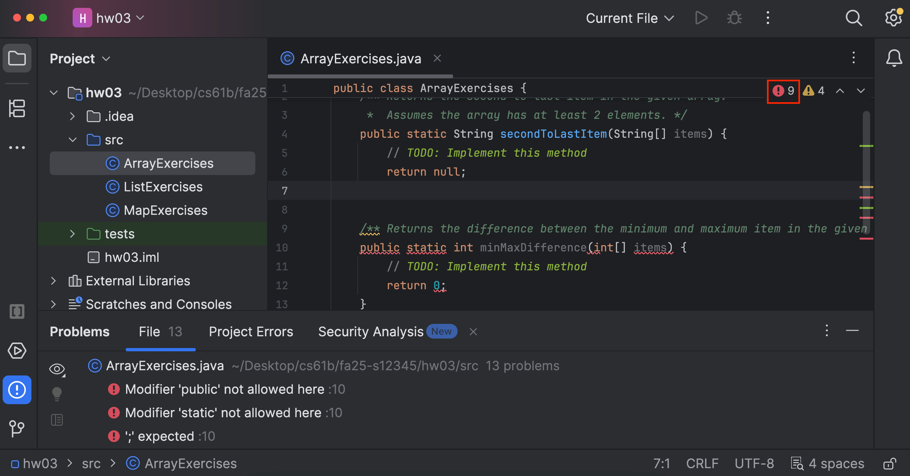

Homework 3: Lists, Sets, Maps, Classes
Lectures needed for this homework: Lecture 2 (Lists, Sets, Maps, Classes). Also, make sure you finished the setup in Homework 1.
Language Constructs
Types
As discussed in the textbook and lecture, Java is a statically typed language, which means that every variable has a type that is known at compile time, meaning you must specify it in your code. In contrast, Python is a dynamically typed language, which means that the type of variables are generally only known at runtime, meaning you do not need to specify them in your code.
In Java, there are two kinds of types: primitive types and reference types. Primitive types are lowercase, and we named the ones that we care about in Homework 2: boolean, int, char, double.
Other than the eight primitive types, every other type is a reference type, such as String. If a type starts with a capital letter, it is a reference type.
null
Java also has null, which is the approximate equivalent of None in Python. Any reference type can be assigned a value of null. If we try to access an instance member or call an instance method from a value of null, we will see an error called a NullPointerException.
Arrays (fixed-size)
Java arrays are a lot like Python lists. However, Java arrays are fixed-size, so we can’t add or remove elements (that is, no append, remove, etc.), and they can only contain a single type. For reasons you’ll learn in 61C (pointer arithmetic), the fact that arrays are fixed-size and can only contain a single type makes them much faster.
| Python | Java |
|---|---|
|
|
- In
new int[3], theintis the type in the array; and3is the length. With this syntax, all elements take on their “default value”. Forint, this is 0. - Arrays do not print nicely, for reasons beyond the scope of PHW2. To print an array, you can call
Arrays.toString(array). - Arrays do not have a length method. It is an instance variable, so it does not have parentheses.
- Java does not support negative indexing or slicing.
Foreach Loop / Enhanced For Loop
| Python | Java |
|---|---|
|
|
- Notice the type declaration of the iterating variable, as well as the usage of
:instead ofin. - We can also use this syntax, called the “for-each loop” or the “enhanced for loop” on certain other types, such as
Lists andSets.
Lists (resizable)
| Python | Java |
|---|---|
|
|
- Like Java Arrays, java
Listobjects can only hold one type. - The syntax for specifying type type of a List awkward. We write something like
List<String> lst = new ArrayList<>();, including the desired type inside<>when declaring the variable. We can leave the<>empty for the instantiation of the variable. - It is also perfectly valid to write
ArrayList<String> lst = new ArrayList<>();, i.e. where the variable is of typeArrayListrather thanList. We’ll discuss the distinction later in the course. Lists, again, do not support slicing or negative indexing.- Due to a quirk with the Java type system, if you want a list of primitive objects, you must use the corresponding Reference type for that primitive type. For example
ArrayList<Integer>instead ofArrayList<int>, orArrayList<Character>instead ofArrayList<char>. Don’t worry about this.
Sets
| Python | Java |
|---|---|
|
|
- Java has two types of
Sets:TreeSetandHashSet.TreeSetkeeps its elements in “sorted” order, and is fast. In contrast,HashSetdoes not have a defined “order”, but is (usually) really fast. - We will formalize these notions of “fast” later on in the course when we learn about asymptotic analysis.
- A
Setcannot contain duplicate items. If we try to add an item already in the set, nothing happens.
Dictionaries / Maps
| Python | Java |
|---|---|
|
|
- Java has two types of
Maps:TreeMap, andHashMap. Similarly to sets,TreeMapkeeps its keys sorted and is fast;HashMaphas no defined order and is (usually) really fast. - A
Mapcannot contain duplicate keys. If we try to add a key already in the map, the value is overwritten. - In the angle brackets, we have the “key type” first, followed by the “value type”.
Maps cannot directly be used with the:for loop. Typically, we callkeySetto iterate over a set of the keys, and use those to retrieve the values. One may also iterate over theentrySetto get both the keys and values.
Classes
| Python | Java |
|---|---|
|
|
We can use these classes as follows:
| Python | Java |
|---|---|
|
|
Exceptions
Lastly, let’s look at how we can throw exceptions in Java compared to Python with previous example.
| Python |
|---|
|
Java |
|
Programming Exercises
For this homework, you’ll again complete several programming exercises. This time, you will complete them in IntelliJ, push them to GitHub, then submit them via Gradescope.
Setup
Follow the Assignment Workflow Guide to get started with this assignment. This starter code is in the hw03 folder. In this homework you’ll be using IntelliJ instead of the Java Visualizer.
Starting with this homework, we will be enforcing style. You must follow the style guide, or you will be penalized on the autograder.
You can and should check your style in IntelliJ. See the style guide for how to do this.
While completing the assignment, you may need to use different data structures like ArrayList and TreeMap. In order to import these classes, if you hover over wherever you are using the data structures, IntelliJ will give you option to import it or you can do it manually by adding:
import java.util.ArrayList;
import java.util.TreeMap;
Task 1: ArrayExercises
ArrayExercises.java has 2 different methods for you to complete:
secondToLastItem: This method takes aString[] itemsand returns the second to last item. Assumes the array has at least 2 elements.minMaxDifference: This method takes aint[] itemsand returns the difference between the minimum and maximum item.
To test your work, in IntelliJ, open ArrayExercisesTest.java in the tests folder, and click the green Play button to run the tests. You cannot run ArrayExercises.java directly, because it has no main method!
If you don’t see the green Play button in ArrayExercisesTest.java, try some of the fixes in IntelliJ WTFS.
Task 2: ListExercises
ListExercises.java has 4 different methods for you to complete:
sum: This method takes a listList<Integer> Land returns the total sum of the elements in that list. If the list is empty, the method should return 0.evens: This method takes a listList<Integer> Land returns a new list containing the even numbers of the given list. If there are no even elements, it should return an empty list.common: This method takes two listsList<Integer> L1,List<Integer> L2and returns a new list containing the items present in both of the two given lists. If there are no common items, it should return an empty list.countOccurrencesOfC: This method takes a list and a characterList<String> words,char cand returns the number of occurrences of the given character in a list of strings. If the character does not occur in any of the words, it should return 0.
For this part, you can import ArrayList.
Task 3: MapExercises
MapExercises.java has 3 different methods for you to complete:
letterToNum: This method returns a map from every lower case letter to the number corresponding to its ordering in the alphabet, where ‘a’ corresponds to 1 and ‘z’ corresponds to 26.squares: This method takes a listList<Integer> numsand returns a map from the integers in the list to their squares. If the given list is empty, it should return an empty map.countWords: This method takes a listList<String> wordsand returns a map from words in the list to the number of times they appear. If the given list is empty, it should return an empty map.
For this part, you can import TreeMap.
Task 4: Dessert.java
Now that we’ve covered the new language constructs from this homework page, let’s reinforce the concepts around class creation from Lecture 2.
Compared to your previous classes, 61B may leave a lot of wiggle room for you on assignments. For example, there’s no skeleton code for this exercise, because you have to create Dessert.java yourself - don’t be alarmed!
Create a class called Dessert (you’ll need to create a new file) inside of the src/ folder. This class should have the following characteristics:
- Two instance variables:
int flavorandint price. - A constructor that takes two parameters
int flavorandint priceand sets the instance variables accordingly. - One static variable
int numDessertsthat keeps track of the number of desserts created so far. - A method
public void printDessert()that prints the flavor and price of the dessert, along with the total number of desserts created so far, separated by a space.- For example, if we create a dessert with flavor 1 and price 2, and then call its
printDessert()method, it should print1 2 1. - If we then create a dessert with flavor 3 and price 4, and then call its
printDessert()method, it should print3 4 2.
- For example, if we create a dessert with flavor 1 and price 2, and then call its
- Lastly, a method
public static void main(String[] args)that only prints the lineI love dessert!when executed.
Be sure to implement the above behavior exactly, otherwise you may not pass the tests!
When you have completed Dessert.java, run DessertTest.java.
How to create a new class in IntelliJ (click to expand)
-
Right-click on the
src/folder on the left-hand side of the screen, then go toNew>Java Class.
-
You should see a popup appear. In the
Namefield, typeDessert, then hit Enter.
-
If you get something like the following popup asking you to add the file to Git, select
Add.
-
You should now see a new file called
Dessert.javain thesrc/folder. It should look like this, after which you can modify it to meet the specifications above:
Dessert class implemented in Python (click to expand)
class Dessert:
numDesserts = 0
def __init__(self, flavor, price):
self.flavor = flavor
self.price = price
Dessert.numDesserts += 1
def printDessert(self):
print(self.flavor, self.price, Dessert.numDesserts)
if __name__ == "__main__":
print("I love dessert!")
Debugging: Syntax Errors
If you’re having trouble running your code, please read through the common errors in this section before asking course staff!
IntelliJ will not run your code (the green play button will not appear) if your code contains syntax errors.
If your code has syntax errors, you will see a red exclamation point in the top-right corner, and there will be red squiggles in your code. To see where the syntax errors are, you can click on the red exclamation point.

If you are seeing syntax errors in parts of the code that you haven’t modified yet, you may have a syntax error earlier in the code (e.g. mismatched brackets), which is causing later parts of the code to not compile.
For example, in the image above, the secondToLastItem method is missing its closing bracket on Line 7. This causes a syntax error on Line 10.
Submission
Graded files that you need to modify:
ArrayExercises.javaListExercises.javaMapExercises.javaDessert.java
Follow the Assignment Workflow Guide to submit. You can submit as many times as you want. The score you see on Gradescope is your final score for this homework.